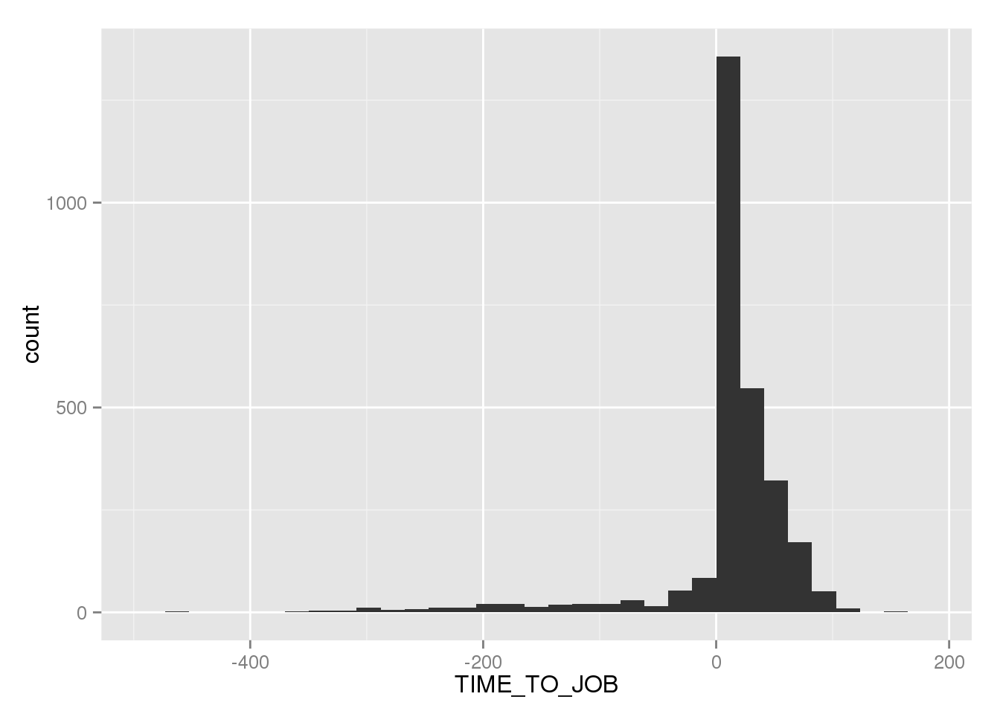

Chapter 11 Row pattern matching
So far, we have mostly been doing things that are equally possible to do in R, and hence the reason for doing it in SQL instead of R is probably performance-related.
Row pattern matching is something quite different, to which there currently isn't any comparable functionality in any R libraries. That is bound to change sooner or later, but for the time being, Oracle has a big selling point in being able to do a type of processing that is both novel, useful and difficult to implement from scratch.
Row pattern matching is, basically, a WHERE-statement on steroids. Instead of selecting individual rows, you can select whole sets of rows, if they, as a group satisfy the criteria you have written. The canonical example is stocks, where you may not be interested in selecting the days where the stock is above, say, 20, but you really want to find periods where the price was increasing. With row pattern matching you can do that - define what an increase means, and then say you want all rows that are part of, f.ex., periods of five or more consecutive days of price increases.
In addition to the amped-up WHERE-clause, pattern matching lets you calculate new columns, called MEASURES, from the patterns that you define. Things like the difference between the start- and end-price in the aforementioned 5-or-more days of stock price increases.
Also, the pattern matching can do aggregations, leaving you with only one row summing up each pattern found.
11.1 A simple(ish) example
Although the stocks make a good and relatable intro to what pattern-matching can do, it is probably more powerful in other areas, with more feature-rich data. Nevertheless, we will start by doing a simple stock-price example where we select periods of stock price increases, however long or short.
SELECT * FROM ticker
MATCH_RECOGNIZE(
PARTITION BY symbol
ORDER BY tstamp
ALL ROWS PER MATCH
PATTERN ( up+ )
DEFINE up AS PREV(price)<price
)| SYMBOL | TSTAMP | PRICE |
|---|---|---|
| ACME | 2011-04-02 | 17 |
| ACME | 2011-04-03 | 19 |
| ACME | 2011-04-04 | 21 |
| ACME | 2011-04-05 | 25 |
| ACME | 2011-04-07 | 15 |
| ACME | 2011-04-08 | 20 |
| ACME | 2011-04-09 | 24 |
| ACME | 2011-04-10 | 25 |
| ACME | 2011-04-13 | 25 |
| ACME | 2011-04-17 | 14 |
Although the query was short, there is a lot of new syntax here, starting with the MATCH_RECOGNIZE command that encompases the whole circus. Inside the match_recognize command, we start off by partitioning by symbol, which just like with the OVER clause says that we want to analyze patterns in different stocks in isolation. Secondly, we order by TSTAMP, which is the time column and denotes in which order things happened (the default ordering, ascending) usually agrees with how we want to analyze pattern in time.
Now, for the really new stuff, which is probably easier to understand if we start with the last line.
DEFINE is where we define the basic building blocks of what we want to match. We say that a row can be classified as "UP" if the stock price is higher that day than it was on the previous day. This is where the ORDER BY statement becomes important - without it, the previous row might not be the previous day, and our results wouldn't make much sense.
In the PATTERN statement, we use the definition(s) we create in the DEFINE statement to specify what combinations of rows we are looking for. This step uses a lightweight version of regex to let us specify the patters, and the +-sign means the same here as in regex: One or more occurance.
Finally, ALL ROWS PER MATCH is an explicit way of telling Oracle not to aggregate the results. In this query, we use match_recognize simply as a filter.
To summarize, we use the DEFINE statement to definitions/labels/classifications of rows, with the help of functions such as PREV (previous row), NEXT, and some other methods that we will return to. We use these labels in the PATTERN statement, where we specify which combinations of these rows we are looking for, and finally we specify that we don't want to aggregate the results.
The output of this, however, isn't easy to make sense of. The first four rows shows that the price increases from 17 to 25, but if we read the code carefully we see that 17 must already be an increase from the day before - otherwise it wouldn't have satisfied the UP definition. But we don't see what it increased from.
Then, it drops from 25 to 15, and skips a day. Presumably, it found the pattern multiple times in the same stock, right next to each other. But we have a hard time reading this from the output, so let's add some more to the query.
Firstly, we want to add the day the pattern starts. To do this we must add a definition to the pattern, but since we don't need this first row to satisfy any conditions other than coming before the first UP, we don't actually have to define it. If that sounds strange, you'll understand when you see it.
Secondly, we want to see when one pattern ends and another starts. We can do this by adding a computed variable, called a MEASURE and a function called MATCH_NUMBER() that specifically enumerates what occurance of the pattern the row is part of.
Additionally, since we now will have two different definitions as part of our pattern, we want to see what each row is classified as. This too we can do in the MEASURE clause, with the special function CLASSIFIER() which returns the name of the definition that triggered.
SELECT * FROM ticker
MATCH_RECOGNIZE(
PARTITION BY symbol
ORDER BY tstamp
MEASURES MATCH_NUMBER() AS match_num,
CLASSIFIER() as clf
ALL ROWS PER MATCH
PATTERN ( strt up+ )
DEFINE up AS PREV(price)<price
)| SYMBOL | TSTAMP | MATCH_NUM | CLF | PRICE |
|---|---|---|---|---|
| ACME | 2011-04-01 | 1 | STRT | 12 |
| ACME | 2011-04-02 | 1 | UP | 17 |
| ACME | 2011-04-03 | 1 | UP | 19 |
| ACME | 2011-04-04 | 1 | UP | 21 |
| ACME | 2011-04-05 | 1 | UP | 25 |
| ACME | 2011-04-06 | 2 | STRT | 12 |
| ACME | 2011-04-07 | 2 | UP | 15 |
| ACME | 2011-04-08 | 2 | UP | 20 |
| ACME | 2011-04-09 | 2 | UP | 24 |
| ACME | 2011-04-10 | 2 | UP | 25 |
This helps immensly with readability. We can see that the start (nicknamed strt in the code) of the pattern is the 31st of march 2011, when the price is 12, before it increases to 17 which was the first observation we saw in the previous query. Also, we get a confirmation that the drop we saw when the price was 25, was the end of the first occurance of the pattern and the start of the second occurance. When we see a new ticker symbol, the match number counter resets.
11.2 A more involved example
In order to really show the power of pattern matching, we have to import some more data. The New York City public payroll data is both public, rich, and has a panel-data structure that allows us to study changes over time. As of this writing, you can find the data at https://data.cityofnewyork.us/City-Government/Citywide-Payroll-Data-Fiscal-Year-/k397-673e.
11.2.1 Importing and cleaning
You can download the dataset as CSV, and use the SQL Developer import wizard to create a table for it. If this was a dataset we were expecting to add more data to regularly, we would have set up a proper import script, probably in R, which would make the process automatic and reproducible. But in this case, just right-click on the tables-folder in the left sidebar, and choose import data. The wizard will guide you through the rest.
library(dplyr)
df <- read.csv('~/citywide-payroll-data-fiscal-year.csv', sep=",",
col.names = c('YEAR', 'PAYROLL_NO', 'AGENCY_NAME', 'LAST_NAME', 'FIRST_NAME', 'MID_INIT',
'AGENCY_START_DATE', 'WORK_LOCATION_BOROUGH', 'TITLE_DESCRIPTION',
'LEAVE_STATUS_AS_OF_JUNE_30', 'BASE_SALARY', 'PAY_BASIS', 'REGULAR_HOURS',
'REGULAR_GROSS_PAID', 'OT_HOURS', 'TOTAL_OT_PAID', 'TOTAL_OTHER_PAY'), header = 1, stringsAsFactors = F)
dbWriteTable(con, "NYCPAY", df)After the data is imported, we want to do a little bit of data analysis to find out what we are dealing with. We can already see there are a few different ways to measure pay (the PAY BASIS column), which we might have to deal with in order to compare pay. But more importantly, since we want to analyze the carreer development of employees, we need to make sure that we have some sort of way of uniquely identifying each employee.
But first, as a matter of good practice, let's add an anonymous ID for each person so that we don't have to use full names everywhere.
ALTER TABLE nycpay
ADD PERS_ID VARCHAR(32) ;
UPDATE nycpay
SET PERS_ID = ORA_HASH(FIRST_NAME || MID_INIT || LAST_NAME);
COMMIT;It is easier to have one column for identifying a person, and if you have worked with personal data before, you will hopefully appreciate working with data that isn't directly personally identifiable (PII). Since the dataset is public this is in principle an empty gesture, but removing PII is nevertheless valuable as a general practice.
Back to uniquely identifying one person. Names are of course not unique, but we also have another challenge: One person may have more than one job with the city. This is a real challenge, because the data won't be unique by person and year - and this is what we want to track. How does each person fare.
In practice we have two choices: Aggregate the data so that it is unique per person per year, or simply remove persons who have had multiple jobs. First, let's check how many people actually have multiple jobs:
SELECT COUNT(1), COUNT(DISTINCT pers_id), SUM(occ) FROM (
SELECT year, pers_id, COUNT(1) AS occ FROM nycpay
GROUP BY year, pers_id
HAVING count(1)>1
)| COUNT(1) | COUNT(DISTINCTPERS_ID) | SUM(OCC) |
|---|---|---|
| 834680 | 259922 | 1831579 |
We can see that out of 3.9 million rows, over 1.8 million belongs to people who have had more than one job in one year. And that there are 259 922 people who have had more than one job. If our goal was to conduct a thorough review of the city's pay data, we would have to choose to aggregate the data in some way in order to construct a dataset that contained every person and a meaningful unique identifier.
Further exploration shows that a large number of people are election workers, which we might not find all that interesting to analyze in a career perspective. We use the chance to create a second table without the names, without the people causing the duplicates, and with some other data tidying thrown in.
CREATE TABLE SIMPLEPAY AS (
SELECT year,
pers_id,
TRIM(upper(AGENCY_NAME)) AS agency,
TO_DATE(SUBSTR(AGENCY_START_DATE, 1, 10), 'YYYY-MM-DD') AS job_start,
TRIM(WORK_LOCATION_BOROUGH) AS job_location,
TRIM(TITLE_DESCRIPTION) AS job_title,
TRIM(LEAVE_STATUS_AS_OF_JUNE_30) AS leave_status,
base_salary,
TRIM(pay_basis) AS pay_basis,
regular_hours,
regular_gross_paid,
ot_hours,
total_ot_paid,
TOTAL_OTHER_PAY
FROM nycpay
WHERE
TRIM(upper(TITLE_DESCRIPTION)) != 'ELECTION WORKER' AND
pers_id NOT IN(
SELECT DISTINCT pers_id FROM nycpay
WHERE TRIM(upper(TITLE_DESCRIPTION)) = 'ELECTION WORKER'
GROUP BY year, pers_id
HAVING COUNT(1)>1
)
);This leaves us with only about 250 000 records (people) per year, but this is hopefully people with fairly regular employment contracts for whom we can do meaningful analysis.
Before we go any further, let's check a column that looks promising: Regular gross pay. This seems to always have a value, which might make it a good indicator of what a person actually makes (some of the other pay-related columns have 0-values, which is not a likely wage level.
We can use the WIDTH_BUCKET function to create bins, and count the number of people in the respective wage brackets. We create 20 bins between $0 and $200,000, which leaves us with neat $10,000 increments. Any values outside the $0-$200,000 interval will be grouped in "overflow" buckets at the low and high end.
SELECT WIDTH_BUCKET(BASE_SALARY, 0, 200000, 20) AS pay,
MIN(BASE_SALARY) AS from_pay,
MAX(BASE_SALARY) AS to_pay,
COUNT(1) AS employee_count
FROM simplepay
GROUP BY WIDTH_BUCKET(BASE_SALARY, 0, 200000, 20)
ORDER BY 1| PAY | FROM_PAY | TO_PAY | EMPLOYEE_COUNT |
|---|---|---|---|
| 1 | 1e-02 | 9910 | 1299806 |
| 2 | 1e+04 | 19928 | 2048 |
| 3 | 2e+04 | 29999 | 65973 |
| 4 | 3e+04 | 39999 | 267240 |
| 5 | 4e+04 | 49999 | 318872 |
| 6 | 5e+04 | 59998 | 257477 |
| 7 | 6e+04 | 69999 | 238067 |
| 8 | 7e+04 | 79999 | 303499 |
| 9 | 8e+04 | 89999 | 317832 |
| 10 | 9e+04 | 99999 | 183706 |
There are no negative values, but a lot of employees with less than $10,000 in base pay. A quick look at the job titles for these low-paying jobs may reveal something about what type of jobs this is.
SELECT job_title, COUNT(1) AS num_employees FROM simplepay
WHERE base_salary<10000
GROUP BY job_title
ORDER BY 2 DESC
FETCH FIRST 20 ROWS ONLY| JOB_TITLE | NUM_EMPLOYEES |
|---|---|
| TEACHER- PER SESSION | 589323 |
| TEACHER-GENERAL ED | 82246 |
| F/T SCHOOL AIDE | 57402 |
| JOB TRAINING PARTICIPANT | 52810 |
| SUBSTITUTE ED PARA | 50308 |
| COLLEGE ASSISTANT | 37153 |
| ADJUNCT LECTURER | 28939 |
| F/T SCHOOL LUNCH HELPER | 28515 |
| STUDENT AIDE | 22667 |
| CITY SEASONAL AIDE | 22412 |
The largest group is job traning participants, but a large and diverse group of school aides dominates the list. Many of these roles can be argued have an element of volunteering or civil engagement to them - pay might not be the main reason these people are doing the job.
The job training participants are a good testcase: Let's look at how they fared. Did any of them end up with a job in the city?
SELECT * FROM (
SELECT year, pers_id, agency, job_title, job_start, base_salary, pay_basis, leave_status FROM simplepay
)
MATCH_RECOGNIZE(
PARTITION BY pers_id
ORDER BY year
MEASURES MONTHS_BETWEEN(FIRST(fulljob.job_start), training.job_start) AS time_to_job,
COUNT(fulljob.*) AS fulljob_years
ALL ROWS PER MATCH
PATTERN ( ^ training fulljob+ )
DEFINE
training AS job_title='JOB TRAINING PARTICIPANT',
fulljob AS job_title!='JOB TRAINING PARTICIPANT'
)| PERS_ID | YEAR | TIME_TO_JOB | FULLJOB_YEARS | AGENCY | JOB_TITLE | JOB_START | BASE_SALARY | PAY_BASIS | LEAVE_STATUS |
|---|---|---|---|---|---|---|---|---|---|
| 1000843506 | 2016 | NA | 0 | DEPT OF PARKS & RECREATION | JOB TRAINING PARTICIPANT | 2016-05-04 | 11.8 | per Hour | ACTIVE |
| 1000843506 | 2017 | 14 | 1 | DEPT OF PARKS & RECREATION | CITY SEASONAL AIDE | 2017-06-30 | 15.2 | per Hour | ACTIVE |
| 1002309329 | 2015 | NA | 0 | DEPT OF PARKS & RECREATION | JOB TRAINING PARTICIPANT | 2013-04-24 | 9.4 | per Hour | CEASED |
| 1002309329 | 2015 | 19 | 1 | HRA/DEPT OF SOCIAL SERVICES | ELIGIBILITY SPECIALIST | 2014-12-08 | 33284.0 | per Annum | CEASED |
| 1006085312 | 2016 | NA | 0 | DEPT OF PARKS & RECREATION | JOB TRAINING PARTICIPANT | 2015-06-29 | 11.8 | per Hour | CEASED |
| 1006085312 | 2020 | 49 | 1 | DEPT OF HEALTH/MENTAL HYGIENE | COMMUNITY COORDINATOR | 2019-07-20 | 36.6 | per Hour | ACTIVE |
| 1010330046 | 2018 | NA | 0 | DEPT OF PARKS & RECREATION | JOB TRAINING PARTICIPANT | 2017-12-13 | 13.5 | per Hour | ACTIVE |
| 1010330046 | 2019 | 17 | 1 | DEPT OF PARKS & RECREATION | CITY PARK WORKER | 2019-05-20 | 16.1 | per Hour | ACTIVE |
| 1010330046 | 2020 | 17 | 2 | DEPT OF PARKS & RECREATION | CITY PARK WORKER | 2019-05-20 | 16.1 | per Hour | CEASED |
| 1011149826 | 2015 | NA | 0 | DEPT OF PARKS & RECREATION | JOB TRAINING PARTICIPANT | 2011-07-05 | 9.3 | per Hour | CEASED |
Here, we have selected people who start out as job training participants, and who (the next time we see them) are regular employees (well, not job training participants anyway). We also measure the number of months from they start job training to they start a paid job, and count the number of rows of regular employment.
From here, we can continue our analysis by counting the number of people this is, compare it to the number of people who have been in job training programmes, and look at the time between the job training programme and their job start. A practical way to do this is by removing the ALL ROWS PER MATCH clause, which will leave us with one row per person.
SELECT * FROM (
SELECT year, pers_id, agency, job_title, job_start, base_salary, pay_basis, leave_status FROM simplepay
)
MATCH_RECOGNIZE(
PARTITION BY pers_id
ORDER BY year
MEASURES MONTHS_BETWEEN(FIRST(fulljob.job_start), FIRST(training.job_start)) AS time_to_job,
COUNT(fulljob.*) AS fulljob_years
PATTERN ( ^ training+ fulljob+ )
DEFINE
training AS job_title='JOB TRAINING PARTICIPANT',
fulljob AS job_title!='JOB TRAINING PARTICIPANT'
)| PERS_ID | TIME_TO_JOB | FULLJOB_YEARS |
|---|---|---|
| 1000843506 | 14 | 1 |
| 1002309329 | 19 | 1 |
| 1002319496 | 21 | 4 |
| 1004555801 | 0 | 3 |
| 1006085312 | 49 | 1 |
| 1006328677 | 16 | 2 |
| 1010330046 | 17 | 2 |
| 1011280536 | 37 | 2 |
| 101235340 | 77 | 1 |
| 1020333191 | 0 | 2 |
Just by deleting a line, we have an aggregate, with the partition variable (PERS_ID), and the MEASURES we defined. This is a great start to take into R for further analysis. We have also changed the query slightly, opening up for multiple years of job training (the training+ argument), and changed our measure to make sure we get moths between the start date of the first year in job training and the start date of the first job.
q <- dbSendQuery(con, "
SELECT * FROM (
SELECT year, pers_id, agency, job_title, job_start, base_salary, pay_basis, leave_status FROM simplepay
)
MATCH_RECOGNIZE(
PARTITION BY pers_id
ORDER BY year
MEASURES MONTHS_BETWEEN(FIRST(fulljob.job_start), FIRST(training.job_start)) AS time_to_job,
COUNT(fulljob.*) AS fulljob_years
PATTERN ( ^ training+ fulljob+ )
DEFINE
training AS job_title='JOB TRAINING PARTICIPANT',
fulljob AS job_title!='JOB TRAINING PARTICIPANT'
)
")
df <- fetch(q)
library(ggplot2)
library(dplyr)
df %>% ggplot(aes(TIME_TO_JOB)) +
geom_histogram() ## stat_bin: binwidth defaulted to range/30. Use 'binwidth = x' to adjust this.
A large portion of the people that get a job in the city after job training, seems to be keeping the job they had in job training, but transition to a normal position. For the group of people who didn't get a job straight from their job training, the curve looks roughly linear. The 5 years of data we have corresponds to 60 months, so the non-neglible number of people getting a job close to 100 months is probably due job tranings that started long before 2014 when our data set starts. The long tail of both negative and positive values are most likely a result of data entry mistakes. This is real world data, and there will be real-world errors.